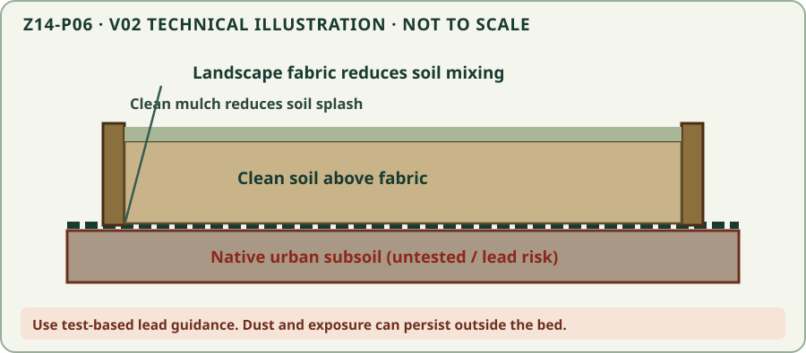

Z14-P06 · Food production and preservation · New manuscript
Build barrier-lined raised beds for urban lead, clay, or wet soils
Choose a raised-bed setup using tested soil and site-specific exposure controls.
When it applies · Urban lots with suspected legacy lead, compacted heavy clay, or shallow wet yards.
Equipment · Untreated rot-resistant lumber (cedar/white oak) or masonry blocks, landscape fabric/geotextile barrier, and clean tested topsoil/compost blend.

Actions
- Construct raised beds using untreated rot-resistant wood, stone, or concrete blocks—NEVER use creosote railroad ties, painted salvage boards, or old CCA-treated lumber that can leach toxic preservatives into garden soil.[P02]
- Test the native soil and follow local environmental-health guidance. EPA recommends clean soil above visible fabric and covered paths where applicable. If results exceed 400 ppm, EPA advises shallow-root crops only with at least 16 inches of clean soil above fabric, or containers.[P02, P32]
- Keep bed widths at roughly 3 to 4 feet maximum so you can reach the center easily from either side without stepping onto and compacting loose fertile soil.[P01, P02]
Failure recognition · Relying on bed depth or fabric alone can miss exposure from contaminated soil, dust, track-in and splash.[P32]
Verify · Confirm the soil-test guidance applies to this site, the soil source is clean and paths are covered as directed.[P02, P32]
Stop or change course · If soil quality is unknown or the site has suspected contamination, seek local environmental-health guidance before growing food in the ground.[P32]
Evidence and editorial notes
- P01 · University of Minnesota Extension · Planting the Vegetable Garden (current web edition)
- Section: Site Selection, Sunlight, Frost Dates, and Short-Season Planning · Conditions: Home vegetable gardening in Upper Midwest / Minnesota (USDA Zones 3–5)
Support: Select a sunny well-drained garden site receiving 6–8+ hours of direct sunlight, match crop days-to-maturity to local last-spring and first-autumn frost dates, and separate cool-season crops from frost-sensitive warm-season crops.
Limitations: Microclimates, low frost pockets, and soil clay/sand composition shift local planting windows by weeks. · Conflicting evidence: None; anchors regional Minnesota growing-season realism.
Editorial note: Grounds Z14 regional food production and frost-window planning. · Specialist reviewer: Horticulture and university Extension specialist
Primary source · checked 2026-11-24 - P02 · University of Minnesota Extension · Planting the Vegetable Garden (current web edition)
- Section: Soil Preparation, Testing, Compost, and Safe Fertility · Conditions: Residential garden beds and small-acreage food plots
Support: Test garden soil through an accredited lab (e.g., UMN Soil Testing Lab) before heavy amending to determine pH, nutrients, and urban lead risk; incorporate finished compost and avoid applying raw animal manure immediately before harvesting edible crops.
Limitations: Urban soils near older painted buildings or roads may contain legacy lead requiring raised beds and clean soil barriers. · Conflicting evidence: None; links soil fertility to food-safety contamination prevention.
Editorial note: Separates safe composted soil building from pathogen/heavy-metal hazards. · Specialist reviewer: Soil science and Extension horticulture
Primary source · checked 2026-11-24 - P32 · US EPA · Healthy Gardening Practices to Reduce Exposure to Lead-Contaminated Soil (current web edition)
- Section: Preparing Your Garden and Recommendations Based on the Amount of Lead in Your Soil · Conditions: Garden lead-exposure guidance after soil testing
Support: EPA recommends clean soil above visible fabric, limiting dust and following test-based restrictions. Above 400 ppm, EPA advises shallow roots only with 16 inches of clean soil above fabric, or containers.
Limitations: Garden exposure advice, not a land remediation standard or guarantee. Follow the local authority for site-specific guidance. · Conflicting evidence: Some site thresholds differ by jurisdiction.
Editorial note: A04 raised-bed correction. · Specialist reviewer: Extension horticulture and environmental health
Primary source · checked 2026-11-25
Source lineage · UMN Extension Gardening; new manuscript · Classification · New manuscript.